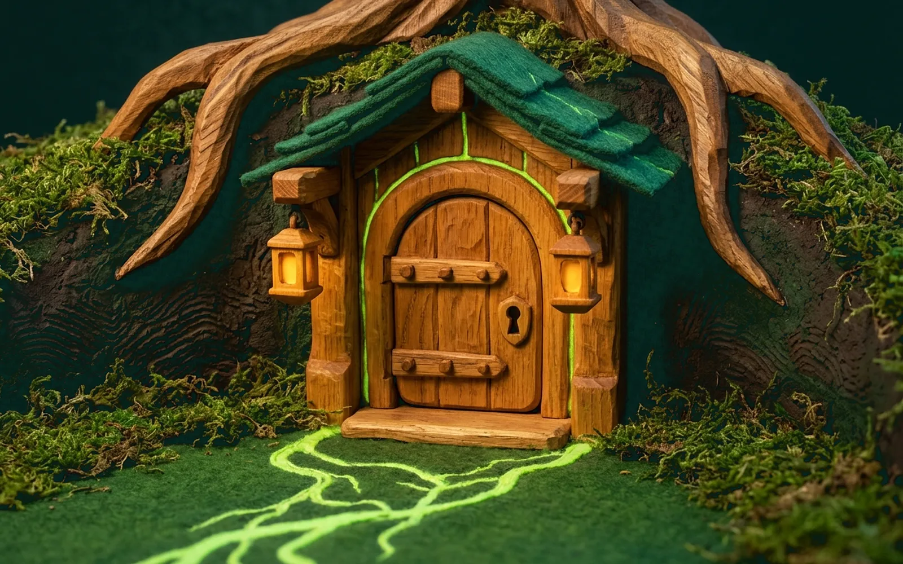

Security and trust
Who holds what
Your key never leaves your computer. This page says where it lives, what the server can do, and what Oak leaves to you.

Where your key lives
Oak is built so that your private key never leaves your computer. When you install the add-on, the wallet lives in ~/.oak/wallet.enc.
- Created locally.
oak initgenerates a 24-word recovery phrase on your machine and shows it once in your terminal. You confirm three random words before anything is saved. - Encrypted at rest. The key is encrypted with AES-256-GCM. The directory is readable only by your operating-system user, and symlinks and hardlinks are rejected.
- Locked with your system keychain. The encryption key sits in macOS Keychain, Windows Credential Manager or the Linux Secret Service. Without a persistent keychain, you set a passphrase of at least 12 characters and type it in your terminal each time.
- Signed locally. Every transaction sequence is simulated first, checked for enough ETH to pay for gas (the network fee), and written to a local journal before it is sent. If the process stops midway, the next run reconciles it.
- Never recoverable by Oak. Oak cannot recover a lost key, by design. Keep the 24 recovery words safe.
Why you run oak init yourself
oak init and oak export refuse to run unless they are attached to a terminal. That check is not authentication, because an agent with shell access can open a pseudo-terminal. Setup is safe because you run both commands in your own terminal, never through the agent. That keeps recovery words and exported keys out of the agent's context, prompts, tool results and logs.
What the Oak server does
The server reads chain data and project APIs, and builds unsigned transactions and previews. It never sees your key and never signs or sends a transaction. Swaps, deposits and every other move go straight from your wallet to the project.
Both the local add-on and the server reject any tool argument that looks like a key or a recovery phrase, such as private_key, mnemonic or seed_phrase.
What Oak cannot protect you from
- Oak will add no safety checks, spending caps or allowlists. If you or your agent sign a harmful transaction after seeing its preview, Oak does not stop it. Fund the agent's wallet only with what you are willing to let it use.
- A recipe you import from a third party is labelled
as-is, not reviewed by Oak. - Running
oak initoroak exportthrough an agent removes the custody boundary described above. - Transactions on Robinhood Chain are public and permanent.
Audits and releases
Oak is in pre-launch verification and has not been released. Independent audit reports are queued for the release gate and are not available yet. Release notes will be published with the first release.
Report a vulnerability
Until launch, report vulnerabilities by email to support@oakagentkit.org. Please do not post vulnerabilities in public, including on X.
In your report, name the affected part, give the steps to reproduce it and say which version you tested.
Private reporting through GitHub opens with the public repository at launch. Once it opens, our process is to acknowledge a report within 48 hours and share a triage assessment within 7 days. Good-faith research on local forks or the testnet is welcome under safe harbor. For news, follow @OakAgentKit on X.